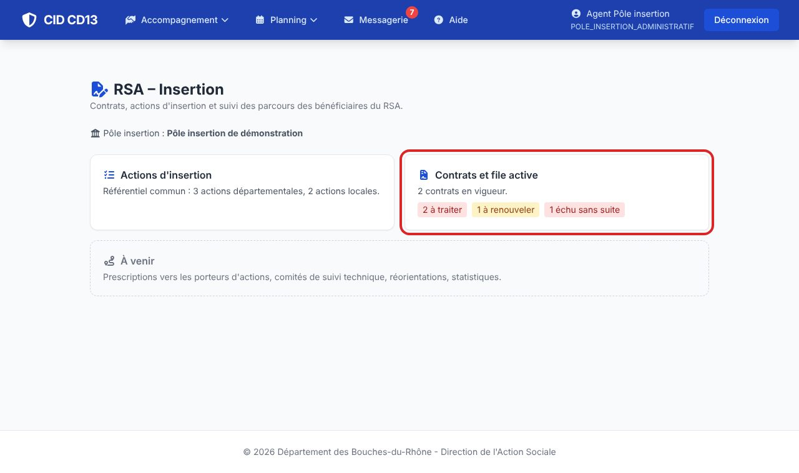
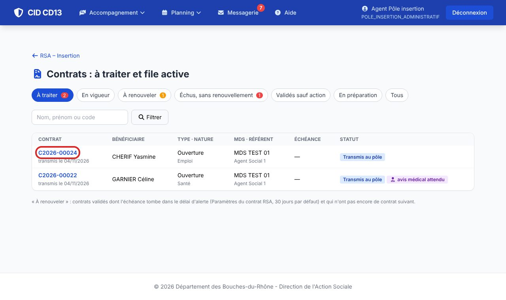
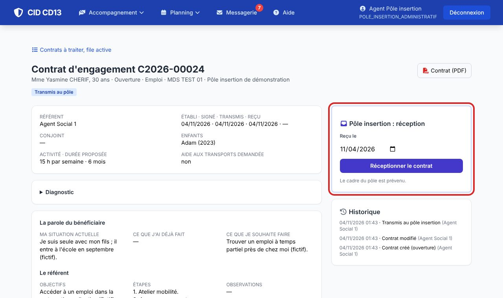
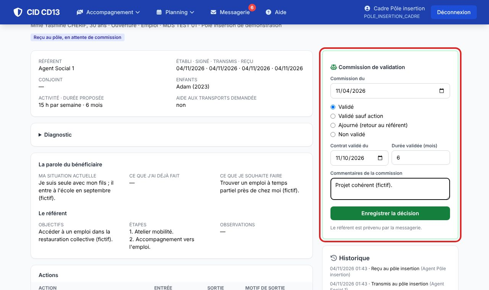
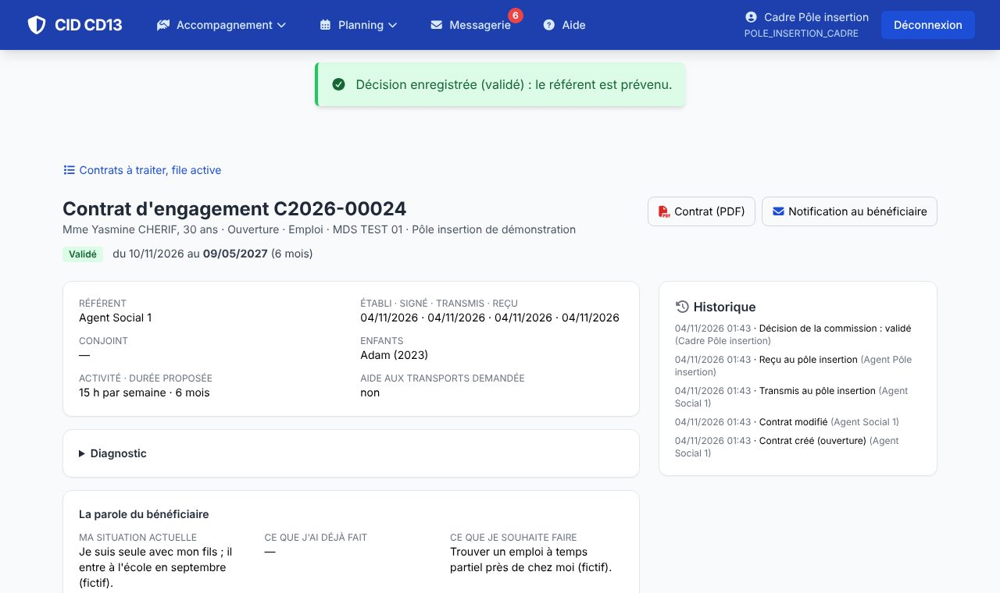
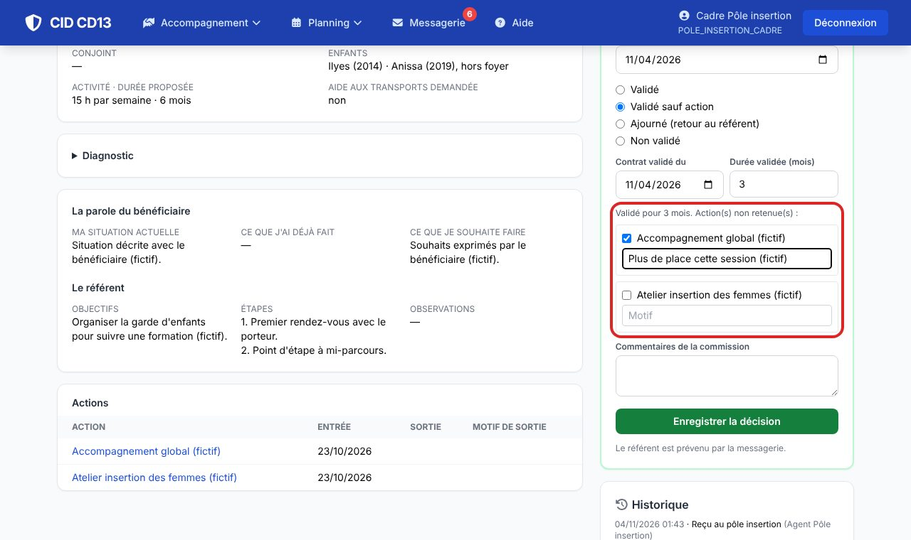
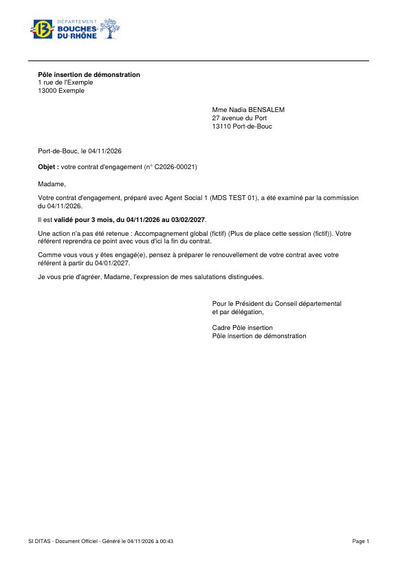

1Voir ce qui est à traiter


- L'onglet À traiter montre à chacun ce qu'il doit faire : réceptionner (administratif), décider (cadre), donner un avis (médecin).
- Les agents du pôle voient le contrat, pas le reste du dossier social du bénéficiaire.
2Réceptionner

- Indiquez la date de réception et cliquez sur Réceptionner le contrat : le cadre est prévenu (et le médecin, pour un contrat santé).
3Décider en commission


- Validé : date de début et durée ; CID calcule la date de fin.
- Ajourné ou non validé : le motif est obligatoire ; un contrat ajourné repart chez le référent.
- Si une aide aux transports est demandée : accordée ou refusée, avec son motif (dérogation, durée maximale déjà accordée, conditions non remplies).
4Valider sauf une action


- Validé sauf action : cochez l'action non retenue et donnez son motif ; le contrat est validé pour 3 mois (réglable en administration), le temps de retravailler ce point.
- La Notification au bénéficiaire (PDF) reprend la décision ; son texte se modifie dans les modèles de courriers.
Bon à savoir
- Le référent est prévenu par la messagerie à chaque décision.
- Un contrat santé d'une personne de moins de 60 ans ne peut être validé qu'après l'avis du médecin du pôle.
Et ensuite ?
Cliquez sur une image pour l'agrandir. Le cadre rouge montre où cliquer ou quoi remplir. Toutes les données affichées sont fictives.